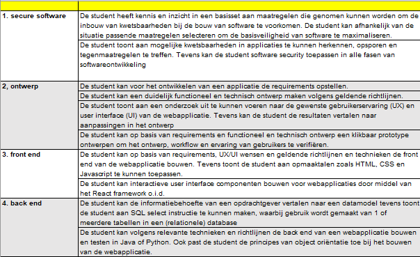

Spring
Les 3 - Servicelaag
Inhoud
- Servicelaag
- SOLID
- Documentatie eindopdracht
Servicelaag
Wat is dat ook alweer?
- Software laag binnen het Spring Framework
-
Software laag binnen het Spring Framework
- Encapsulates domeinklassen
- Valideert verzoeken van de controller-laag
- Controleert data
- Transformeert data
- Authoriseert verzoeken van de controller-laag
"Keep your controllers & repositories stupid, and your services smart, and you get a maintainable and well-testable solution."
SOLID
S - O - L - I - D
- ingle Responsibility Principle
- pen/Closed Principle
- iskov’s Substitution Principle
- nterface Segregation Principle
- ependency Inversion Principle
Single Responsibility Principle
"A class should be having one and only one responsibility."
Open/Closed Principle
"Classes should be open for extension but closed for modification."
Liskov’s Substitution Principle
"Parent classes should be easily substituted with their child classes without blowing up the application."
Interface Segregation Principle
"Many client specific interfaces are better than one general interface."
Dependency Inversion Principle
"Classes should depend on abstraction but not on concretion."
Zelfstudie SOLID
Extra & nieuw advies
- Zet de crud-repositories klassen in een eigen package. Goede namen hiervoor zijn: persistence of repository;
- Klasse en packages zijn zelfstandige naamwoorden;
- Klasse-, tabel- en packagenamen zijn altijd enkelvoud;
- Methode-namen zijn werkwoorden (+ lijdend voorwerp)
- Alle namen moeten niet ambigious zijn;
- Namen moeten uitleggen of verklaren wat de inhoud is.
Literatuur
Huiswerk
- Bestudeer code van Spring security voor maandag.
- Deze code wordt donderdagavond of vrijdag gepubliceerd.
Eindopdracht
Eisen
- Document: Analyse en onderzoek
- Document: Functioneel ontwerp
- Document: Technisch ontwerp
- Document: Verantwoordingsdocument
- (+ installatiehandleiding)
- Applicatie: frontend & backend
- Link: Naar github-repo
FO - Niet zo

Dit is niet fijn

Dit is fijn

Ook goed

Tips - Algemeen
- Houdt de mapstructuur van IntelliJ aan. Voeg daar in de hoofdmap een directory 000 - Documentatie aan toe.
- Lever niet je aantekening, krabbeltjes of andere onnodige dingen in.
- Schrijf minimaal en maximaal 1 readme die je folderstructuur uitlegt en waar ik alles kan vinden
- Lever de bestanden die je normaal in .gitignore zet niet in.
Tips - documentatie
- Maak er een document van (inleiding, inhoudsopgave etc. etc.)
- Beschrijf de afbeeldingen en diagrammen die opgenomen worden.
- Zorg ervoor dat afbeeldingen leesbaar zijn zonder in te zoomen.
- Misschien diagrammen opknippen
- Maak geen verwijzingen naar diagrammen buiten het document.
Tips - documentatie (2)
-
Analyse en onderzoek bevat:
- Rapportage vooronderzoek
- Product requirements
- Rapportage UX/UI onderzoek
- Functioneel ontwerp bevat:
- Prototype (schermontwerpen)
- Use cases
- Use case diagrammen
- Activiteitendiagrammen
Tips documentatie (3)
-
Technisch ontwerp bevat:
- Klassendiagram
- Sequentiediagram
- Verantwoording technische ontwerpkeuzes
-
Verantwoordingsdocument bevat:
- Installatiehandleiding
- Verantwoording wat wel en niet af is.
Tips git
- Vergeet de link naar je repo niet toe te voegen (in de readme bijvoorbeeld).
- Commit en push regelmatig. Per user story of per dag(deel)
- Gebruik (feature-)branches per user-story
- Merge de branch naar dev of master wanneer klaar
Tips code
- Die target- & .idea-folders en .iml bestanden hoef je echt niet in te leveren.
- Zorg voor goede package-, klassen-, methodes- en variabelenamen.
- Gebruik Java conventies.
- Unittest de belangrijke functies binnen je code.
- Gebruik Javadoc om verklarend en uitleggend commentaar te schrijven.
- Voorkom nutteloos en/of outdated commentaar
Matrix
Besteed zorg aan hoe je het inlevert, dan besteed de nakijkdocent zorg aan het ingeleverde werk.